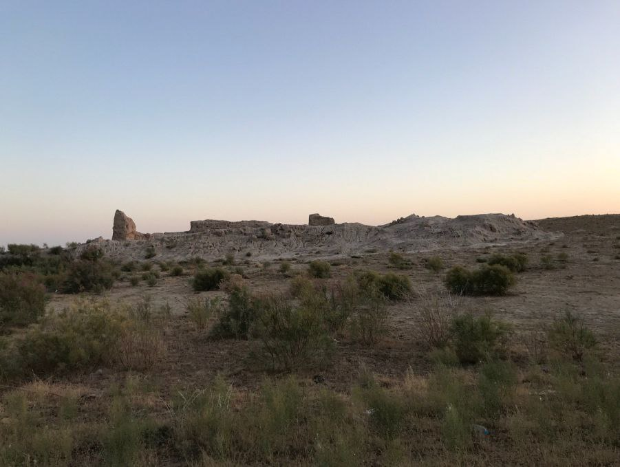
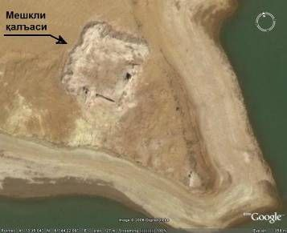

"MESHYEKLI KARVONSAROYI"
1. Me’moriy inshootning nomi:
"MESHYEKLI KARVONSAROYI"
2. Me’moriy inshoot tiklangan yil:
XI-XII asrlarga oid
3. Me’moriy inshoot joylashgan manzil:
Xorazm viloyati Hazorasp tumani
“Tuproqqal’a” qishlog‘ida joylashgan.
4. Me’moriy inshootning qurilish materiallari:
Xom g‘isht, paxsa - guvala, qum, yog‘och
5. Inshootning bosh fasadi h.k.lar:


6. Me’moriy inshootning o‘lchamlari
Meshekli qal’a rejalashtirilishiga ko‘ra kvadrat shaklda bo‘lib, o‘lchami 60x60 metrni tashkil etadi.
7. Me’moriy inshoot to‘g‘risida tarixiy ma’lumot:
Meshekli qal’a dastlab 1939 yilda S.P.Tolstov tomonidan mo‘g‘ullargacha bo‘lgan karvonsaroy sifatida qayd qilingan va Xorazm arxeologik xaritasiga kiritilgan. XX asrning 70-yillarida yodgorlikni M.Mambetullayev tadqiq qiladi va XI-XII asrlarga oid madaniy qatlam qoldiqlarini aniqlashga muvaffaq bo‘lgan.
Janubi-sharqiy devor yarim aylanali gofrilar (qat-qat burma) bilan bezatilgan. Saqlanib qolgan devorlarning balandligi 4-8 m ni tashkil qiladi. Sharqiy devorda qal’aga kirish joyi -darvoza o‘rni mavjud. 2004-2005 yillarda Xorazm Ma’mun akademiyasining arxeologlari tomonidan tadqiq qilingan. Yodgorlikning xonalari ochib o‘rganildi. Ularning poydevori toshlardan va 35x35x4 sm, 37x37x4 sm hajmli pishgan g‘ishtlardan terilgan. Madaniy qatlamlardan topilgan sopol idishlar – xumlar, xumchalar, ko‘zalar va kosalar XII-XIII asrlar boshlari bilan belgilanadi.
8. Me’moriy inshootning texnik holati:
Yer ustki qism 90% devor konstruksiyalari ekologik va texnogen ta’sirlar natijasida yo‘qolib ketgan
BOSH SAHIFAGA QAYTISH